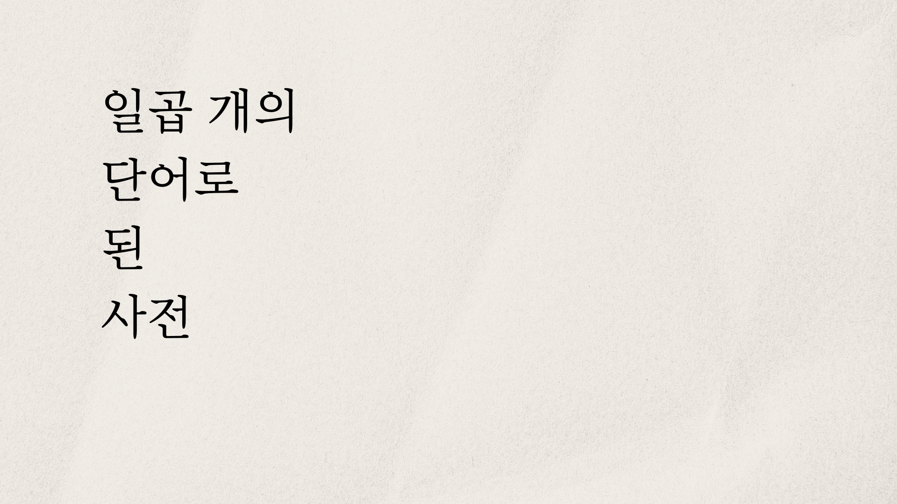

봄, 놀라서 뒷걸음질치다
맨발로 푸른 뱀의 머리를 밟다
슬픔
물에 불은 나무토막, 그 위로 또 비가 내린다
자본주의
형형색색의 어둠 혹은
바다 밑으로 뚫린 백만 킬로의 컴컴한 터널
--여길 어떻게 혼자 걸어서
지나가?
문학
길을 잃고 흉가에서 잠들 때
멀리서 백열전구처럼 반짝이는 개구리 울음
시인의 독백
"어둠 속에 이 소리마저 없다면"
부러진 피리로 벽을 탕탕 치면서
혁명
눈 감을 때만 보이는 별들의 회오리
가로등 밑에서는 투명하게 보이는 잎맥의 길
시, 일부러 뜯어본 주소 불명의 아름다운 편지
너는 그곳에 살지 않는다